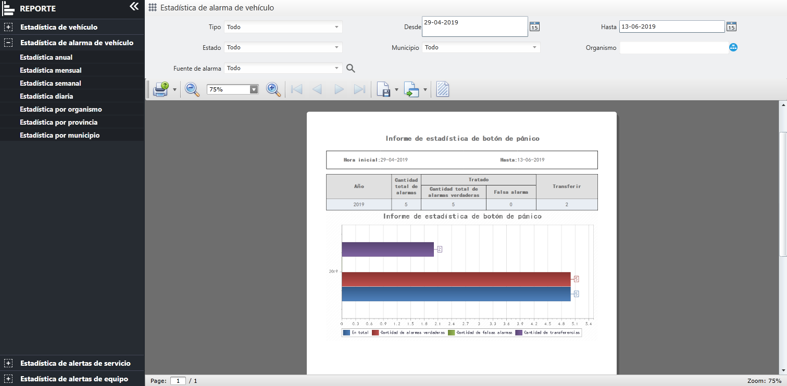

Botón de pánico se cuentan por año, mes, semana, día, organización, provincia y ciudad, y se muestran en forma de tablas y
gráficos. El contenido de estadísticas incluyen: el número total de alarmas, el número de procesados, el número de alarmas,
la alarma de transferencia y otras informaciones.
Presente los métodos de operación de las diversas funciones del servicio de estadísticas de alarmas tomando las estadísticas
anuales como ejemplo.
|
1. |
En la barra de menú de navegación izquierda, haga clic en para ingresar a la página “Estadística de alarma de vehículo-Estadística anual”, como se muestra a continuación

Fig 77 Estadística de alarma-estadística anual |
|
2. |
Configure las condiciones de consulta, el sistema admite consultas únicas y combinadas. |
|
3. |
Configure la hora de inicio y finalización, haga clic en el botón 〖 〗 y el informe mostrará todas las alarmas que cumplen con las condiciones de la consulta. 〗 y el informe mostrará todas las alarmas que cumplen con las condiciones de la consulta.
|
• |
Las funciones de consulta, impresión, exportación y configuración de filigrana son las mismas que las de los informes de datos
de video, y no se repetirán nuevamente. |
|
• |
Los métodos de operación estadística por mes, semana, día, organización, provincia, ciudad y vehículo son los mismos que las
estadísticas anuales, y no se repetirán nuevamente. |
|